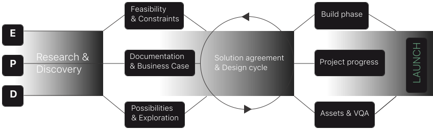
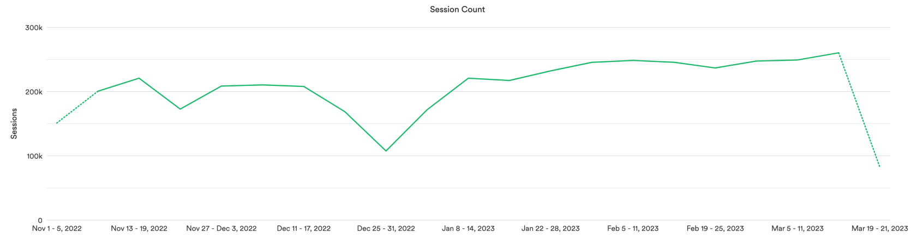

About HashiCorp
HashiCorp is a unicorn company focused on building automation software for platform teams to improve developer velocity, reduce risk, and optimize efficiency. HashiCorp believes that a multi-cloud strategy is the future of infrastructure and unlocking this cloud model is key to enable success for everyone.
HashiCorp is a very transparent, engineering-centric company with a key focus on the practitioner and support of OSS. The idea is to show the power of our tooling through OSS adoption and then leverage that knowledge to support companies at a later stage in their growth when they have different, larger, enterprise needs.
The problem to solve

Prior to HashiCorp Developer existing, documentation and tutorial content was split out across 9 entirely different sites, creating a very disparate and disjointed experience for practitioners. HashiCorp believes that our products truly work better together and this experience didn’t support cross-product discovery, use-cases, or learning. All tutorials were on an entirely different site, leading to confusion as to where to go to find the content needed to solve problems or move forward in using our products.
There’s a lot of overlap between reference material and tutorial content, making it very challenging to find the right content to bridge the practitioner knowledge gap. The first step in bringing clarity to this distinction is bringing the content all under the same roof.
More succinctly, the documentation experience we were offering our users was not up to HashiCorp standards. Practitioners are the lifeblood of the company and we needed to do better.
My role
I lead design strategy for the combination of the platforms, managed the other designers working on the effort, as well as direct individual contribution. I was more of a player-coach role, which allowed me to stay close to details in being a contributing designer of the daily work, while also being able to zoom out and see the big picture.
The entire team was a newly formed entity while working on this effort so we had a lot to figure out in a short period of time, from effective workflows, building relationships and also navigating a lot of internal complexities, numerous stakeholders, partners and aggressive timelines.
Known complexities and constraints
- Every one of HashiCorp’s products is different and the majority of them have different types of users.
- Content for documentation and tutorials have never lived together side-by-side.
- The migration affected and needed to include a large number of internal stakeholders including the Education team, technical writers, developer relations among the standard product and engineering.
- Aggressive timelines to launch the full beta product including all content by HashiConf in October ‘22
- Intentional concessions needed to be identified and agreed upon in order to maintain a reasonable scope
- Being the first to leverage a brand new design system, Helios, that was actively in development during our build
Proposed solution

In order to meet the needs of practitioners, both current and future the documentation and tutorial content needed to be less siloed and consolidated into a singular platform. To best support multi-product use cases, product discovery and growth - they needed to all be in the same place.
This space needed to be built into a content platform, and not a grouping of disjointed product-focused sites. The experience varied a good bit across whichever site you were utilizing, so this was a good time to streamline the information architecture, content strategy and firm up on the use cases.
Research
Initial qualitative research and understanding was started prior to my arrival to the company and project, but insights were heavily leveraged from these initial efforts and bolstered along the way. Throughout the project we were utilizing Maze for usability testing to identify key issues or areas for improvement in proposed solutions as well as gathering feedback from HashiCorp ambassadors.
HashiCorp has a fantastic ambassador program built of external resources who opt-in to allow us continuous research and interviews with actual practitioners. Through the process we were able to run concepts by members of this program to continuously validate the hypothesis we were proposing.
Over and over again, the previous experience was highlighted as a pain point. We frequently received feedback that using our documentation usually required having multiple tabs/windows open with a lot of jumping back and forth.
Post launch we launched several feedback surveys, conducted intereviews and built out the next set of the most requested features. We highlighted several major pain points even in the new product which has led us into the iterative phase of this project.
A few of the more requested items and themes were:
- Dark theme support
- Improvements to the search dialog
- Issues traversing through all the content (i'll get into that in another case study)
Collaboration model

We worked in a pretty standard squad model with a dedicated PM, group of engineers and a designer. Even still, this model is new for HashiCorp and there was a lot to figure out between the teams and how to effectively move through the process together as a single unit.
To start, all groups work collaboratively in the discovery phase, align around a user-centric signular problem statement that we can all get behind before diverging into a few particular areas. At HashiCorp the documentation of a project or effort is critical and part of the DNA of the company. Product works on documentation referred to as a RFC, where all members of the project contribute in various ways. The purpose of the RFC is to gain group and stakeholder alignment around the proposed solution to a problem. Design does an initial design spike to look at various options, solutions and general thoughts. Engineering identifies constaints, blockers or general constraints. Product works on combining all these efforts into the document before it's finally signed off on.
At that point a general concensus of solutioning is agreed upon, but Design needs to partner with Engineering to really identify the optimal solution. We worked very quickly and iteratively in tight cycles to keep everyone aligned. Asynchronous proposals were created using Loom videos to show progress, concepts and explain rationale. Once a solution has been settled upon, Design would offer the solution up for a formal team critique in which we'd gather and consider all feedback from stakeholders and partners.
After feedback is received, we'd consider the suggestions, make adjustments as needed and then we'd transition into the build phase with Engineering. Engineering would work in tight loops much like the design process. Once solutions were deemed complete, we'd go through a team VQA process, identify gaps, assess quality and finally approve the project PRs for launch.
Results
Metrics were a challenge initially due to trying to compare traffic across 9 sites and how that translates to effective usage of a single platform. Changing the entire structure of the product also meant there were some large SEO impacts, where we worked with an expert to help us navigate and mitigate some of the SEO hit we’d incur.
Overall, we launched the product on-time for HashiConf with no issues and all products were successfully migrated in time for the product announcement.
Since the migration and monitoring metrics, we’ve had some pretty nice trends across user/session count as well as traffic improvements to content sections that were previously undiscoverable.

Next steps
We faced numerous challenges when sorting out the IA of the platform due to the timelines and combination of so many different types of content. The biggest project to come is definitely resorting of the overall information architecture.
Doing this fixes a numbe of big issues including:
- Set appropriate nesting structure of parent and children documents
- Allow the sidebar navigation to be more accurate in where it's leading
- Have consistent navigational structures across each product for easier wayfinding of important content